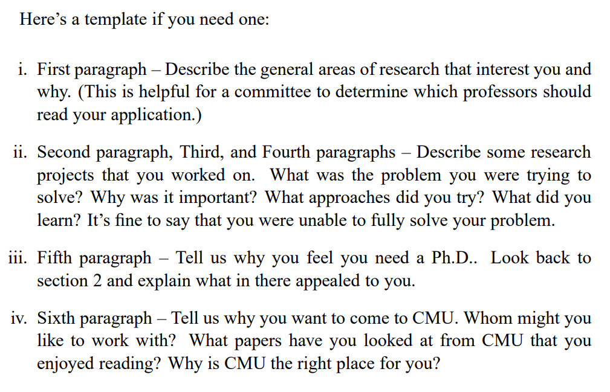

留学申请不完全指南
前言
留学与国内上学之间的区别，首要考虑的应该是 经济 和 语言 因素。不仅是自己需要克服，对应的接收学校也在着重考虑。首先，留学生的学费比本地学生贵，对于PhD项目来说，就是导师负责你的工资以及读博期间的开销。所以导师考虑的因素也有很多，包括是否自带奖学金（↑），是否已经有过硕士学位（↑），什么时候毕业等。
Admitting a graduate student is a significant financial commitment.
其次，语言障碍也不容小视。能正常交流、阅读学术论文是基础，此外，你还必须拥有英文学术写作、用英文在学术会议上报告的能力。导师修改paper的时候只想专注于你的构思，他们可不想再充当语法修改的英语老师。然而，即使你需要花比母语者更多的时间进行论文修改，仍然可能存在一些问题。
This is due to issues such as less interesting choice of words, less varied sentence structure, and poor control over the rhetorical structure of the paper.
如果仔细考虑过以上两点后，还没有劝退你，请继续往下看。
材料审核流程
每个faculty会组织多名staff对候选人的资料进行评估。staff可能包括行政人员、教授、校友等。一般会录取两种人：某教授点名推荐的人（可能事先经过了套磁），以及评审团一致认为优秀切合适的人。注意，有时候太优秀的人也会被拒绝，因为“over qualified”，可能不适合对应的项目。
一些建议
From a research advisor's perspective, a foreign student needs to be outstanding and exceptional to justify the extra financial and time cost of admitting a foreign student.
要体现出你真的够格，应该注意哪些细节呢？
- English expression must be perfect.
申请资料更要注意，沟通邮件也不容忽视。如果在日常的书面沟通中，你都语法错误不断，拿什么说服教授，你能够顺利地进行学术写作呢？
- Show a clear and sincere interest in the faculty's research area.
不要用一个大模板再填入几个对应的关键词来进行海投，老师一眼就能看出来。除了在申请材料中提到细分领域的关键词，你至少应该花些时间对所投项目，以及老师的研究领域进行更深入的了解。如，阅读几篇最新的论文、提出自己感兴趣的问题，甚至列出自己的研究计划等。有时候，可能你在前期调研的过程中就能意识到自己并不喜欢这个领域，也可以及时止损。
- Use an ASCII-representable name in your email if your native language is ideographic.
最好用学校的edu邮箱进行沟通交流，以免重要材料被标记成垃圾邮件，影响沟通和申请。
- Check to see how many students the professor currently has.
一般来说，一个课题组不会接收超过3-10名新生，如果坑里已经有萝卜了，就算你是爱因斯坦，可能也不会被接收。
申请时的建议
- Personal Statement
- 展现你的学术能力（或潜力）：critical thinking & relevant research/project experience
- 强调你为什么适合这个项目，适合这个学校
- 不要过于强调“儿时的梦想”和你有多么“热爱”这个领域，太虚了，并且来申请这一项目的人默认都具有这一特征
- 可以讲讲你在做项目时克服困难的过程，收获的成长（能体现出你的形象：displayed excellent problem solving skills, were a leader, or showed initiative）

- Supplemental information
确保附件都是与项目申请相关的内容，切忌堆砌奖项！有人可能会认为，那样体现了更全面的自己，实际上在评审团眼里，你只是单纯的不会审题。
- Refference Letters
提前安排好时间，确保推荐人有足够的时间为你提交推荐信。推荐人的挑选也值得注意，最好是你某个项目导师，能够体现你的学术能力。学界>业界。
You want words like self-motivated, strong research potential, own initiative, independent, and driven to appear in your letters.
- Make Your Point Fast
每份材料的审阅时间大约是2-8分钟，而你的PS会先被扫读一遍，只有评审人感兴趣的情况下才会细读。所以最好将最重要的点体现在第1-2段里，并时刻保持言简意赅。
参考资料：
2021/05